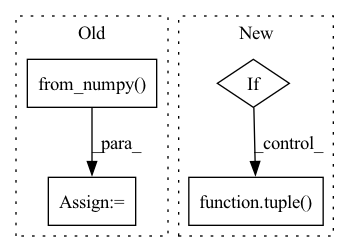

Pattern ID :25928
Before Change
pass
result.append(partial)
else:
ch_dtype = ch.from_numpy( np.empty(0, dtype=memory_allocation.dtype)) .dtype
result = ch.empty(*final_shape,
dtype=ch_dtype)
try:After Change
allocated_buffer = self.allocate_query(memory_allocation,
batch_size,
batches_ahead)
elif tuple(
self.allocate_query(q, batch_size, batches_ahead) for q in memory_allocation
)
memory_buffers[op_id] = allocated_buffer
In pattern: SUPERPATTERN
Frequency: 3
Non-data size: 4
Instances Fragment ID: 78333595
Project Name: libffcv/ffcv
Commit Name: 1e28d9884436db64131ee02d545d2c5374f19dc9
Time: 2021-11-13
Author: leclerc@mit.edu
File Name: ffcv/pipeline/pipeline.py
M Class Name: Pipeline
N Class Name: Pipeline
M Method Name: allocate_memory(3)
N Method Name: allocate_memory(3)
M Parent Class:
N Parent Class:
M File Name: ffcv/pipeline/pipeline.py
N File Name: ffcv/pipeline/pipeline.py
M Start Line: 70
M End Line: 105
N Start Line: 100
N End Line: 112
Before Change
SAR_out[m] = SAR[m + (dum, p_opt)]
p_opts[m] = p_opt
p_opts = pt.from_numpy( p_opts) .to(SDR_out.device)
return SDR_out, SIR_out, SAR_out, p_opts
After Change
args_out[i][m] = arg[m + (dum, p_opt)]
p_opts[m] = p_opt
if return_perm:
return (loss_out,) + tuple( args_out) + (p_opt,)
else:
return (loss_out,) + args_out
Fragment ID: 78333594
Project Name: fakufaku/torchiva
Commit Name: d2b2bceef6944715a6274920e6ec7b0374367ccd
Time: 2022-01-31
Author: robin.scheibler@linecorp.com
File Name: torchiva/metrics.py
M Class Name: AnonimousClass
N Class Name: AnonimousClass
M Method Name: _solve_permutation(1)
N Method Name: _solve_permutation(3)
M Parent Class:
N Parent Class:
M File Name: torchiva/metrics.py
N File Name: torchiva/metrics.py
M Start Line: 204
M End Line: 234
N Start Line: 150
N End Line: 182
Before Change
for i in range(n_fields):
values = [[item[i]] for item in batch]
values = np.concatenate(values, axis=0).astype(DEFAULTS.np_dtype)
values = torch.from_numpy( values)
ret.append(values)
return tuple(ret)
After Change
tuple or dict of Tensor,
the concatenated values to feed into neural networks
if isinstance(batch[0], dict):
keys = batch[0].keys()
collated = _default_collate_fn([tuple( b[k] for k in keys) for b in batch])
return {k: collated[i] for i, k in enumerate(keys)}
else:
return _default_collate_fn(batch) Fragment ID: 78333593
Project Name: deeppsp/torch_ecg
Commit Name: c7cd8be9b8aa243c40c5fe2cdcd799a24fa21b6b
Time: 2022-08-02
Author: wenh06@gmail.com
File Name: torch_ecg/utils/utils_nn.py
M Class Name: AnonimousClass
N Class Name: AnonimousClass
M Method Name: default_collate_fn(1)
N Method Name: default_collate_fn(1)
M Parent Class:
N Parent Class:
M File Name: torch_ecg/utils/utils_nn.py
N File Name: torch_ecg/utils/utils_nn.py
M Start Line: 697
M End Line: 707
N Start Line: 699
N End Line: 706